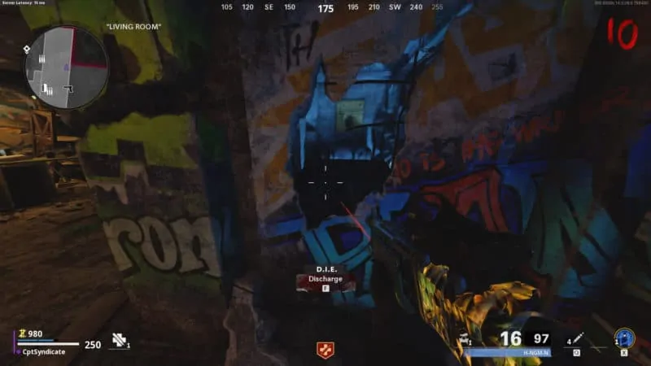
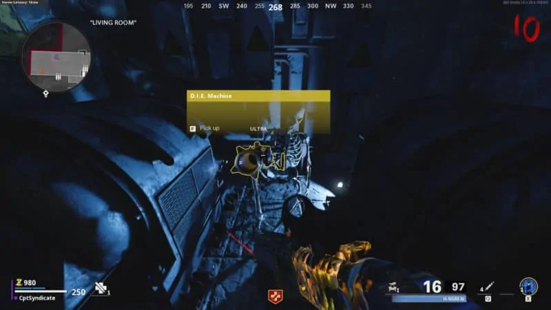

In this guide, we have covered each step required to complete the main easter egg on the Die Maschine map.
Below we have covered all the steps in order, and if you follow this guide exactly as given, you will be able to complete the full easter egg alone.
If you do it with friends, then it will be even easier, of course.
To begin with you must have turned on the power and forged the Pack-A-Punch machine. If you haven't already, then do so.
Wait until the Megaton spawns and lure him to the back of Nacht. This is the pond area.
You will see a tree right as you enter the pond area coming from the Jugger-Nog perk machine.
This tree will have huge spores coming out of its bark.
Lure the Megaton towards this tree and wait for him to attack you using his super ability.
Stand behind or near the tree and make sure that the poison or fungus from the Megaton hits the spores.
The spores will now turn purple. You're done here for now.
You can now kill the Megaton and it will split into two Megaton Blasters.
Kill both of them and the second blaster will drop a keycard.
It'll be easy to spot as it will be an ultra loot and glow yellow.
Pick up the key and make your way to the Weapons Lab in the Facility.
In the Weapons Lab, you can use the Keycard on the Weapons Locker.
After using the Keycard, a drawer will open up, revealing a D.I.E Remote Control.
Pick it up and go to the Nacht living room near spawn.
There is a small room inside the living room next to the stairs.
There is a wonder weapon inside this room.
You can activate it as a trap when you stand on the right side of the room.
There is a crack in the wall and you can use the D.I.E Remote Control to activate it.
Before activating, make sure you have a horde of around 30 zombies.
Activate the D.I.E Machine Shockwave and it will start sucking in through the vent above the door of the small room.
Ensure the zombies are passing through it, and their souls will get sucked into the D.I.E Machine Shockwave,
then you can activate it again to discharge and blow open the door.
Go inside and you can pick up the base version of the D.I.E Wonder Weapon.
 You can then pick up the wonder weapon and make your way to the roof of Nacht.
Halfway through, you will see a wooden box at the edge of the blown off Nacht roof.
Hit it with your wonder weapon, and it will fall near the tree where we lured the Megaton to hit earlier.